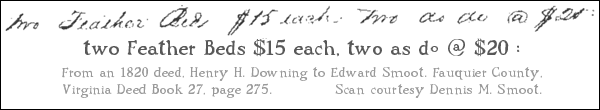
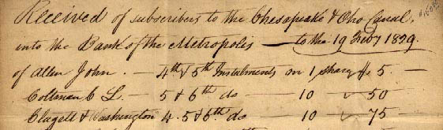

Old Style Handwriting and
Printers’ Ligatures, &c.

The commercial at is most often seen on invoices and billings and has received great exposure as
the separator seen in e-mail addresses, i.e., dogtrotxp@attbi.com. Yet this character is
very old and seems to have been developed from the clerks’ handwritten word, at. The
commercial at probably developed as sort of a shorthand version of the a and the letter t
and like the two letters et which became our ampersand, the commercial at became a
special character -- similar to a ligature (two or three letters combined into one type face), but unlike the
ligature, the original letters of the commercial at are not readily apparent.
The ditto is most often seen today as this mark, " , but
in our older documents we often see the ditto abbreviated
as do, do,
or do. It is the same type of abbreviation style as
first and last letters used for the name William, Wm. Beginning
genealogists sometimes stumble over the do when they view their census images.

An 1829 usage of do, in this case indicating
the ditto is a repeat of the word Installments.
|